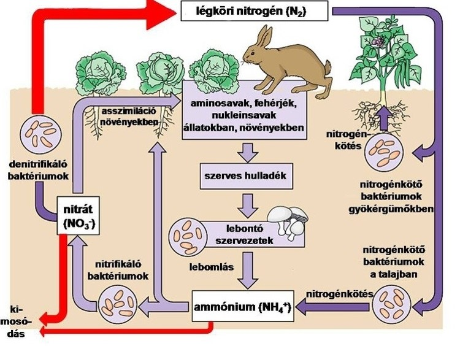

Ebben a dolgozatban egy kémiai témájú szöveget kell megformáznod a tanult szabályok alapján. Sorban haladj a feladatokkal! Ne felejtsd el minden lépés után menteni a munkádat (Ctrl + S)! Az óra végén a fájlt a Fájlkezelőben másold be a Dolgozatok megosztott meghajtóra!
A részfeladatok alatt lévő jelölőnégyzetekkel követheted a haladásodat és a várható jegyedet az oldal alján lévő sávon.
Kattints arra a betűjelre, amit a tanártól kaptál! Figyelem: a választás után csak a saját csoportod feladatai maradnak a képernyőn!
A feladatokhoz szükséged lesz erre a két képre. Kattints rájuk jobb gombbal, és válaszd a Kép másolása vagy Kép mentése másként... opciót, amikor a feladat kéri:

Másold ki a fenti nyers szöveget a Másolás gombbal, illeszd be egy új Word-dokumentumba, majd mentsd el a saját mappádba (H:) A légkör kémiája Saját Neved.docx néven (az F12 billentyűvel)!
Mindenképp legyen benne a neved a fájlnévben!
Állítsd be a dokumentumban a bal margót 3 cm-esre, a többit (jobb, alsó, felső) pedig 2-2 cm-esre az Elrendezés → Margók → Egyéni margók... menüpontban!
Állítsd be a dokumentumban a felső és alsó margót 2,5 cm-esre, a bal és jobb margót pedig 2-2 cm-esre az Elrendezés → Margók → Egyéni margók... menüpontban!
Kapcsold be a teljes dokumentumra az automatikus elválasztást (Elrendezés → Elválasztás → Automatikus)!
A szövegben a kémiai képletek számai sima számként szerepelnek (pl. N2, O2, CO2, H2O, O3, CH4, SO2). Alakítsd át a képletekben lévő összes számot alsó indexszé (pl. CO2)! Használhatod a Ctrl kijelölést a gyorsításhoz, vagy akár a Keresés és cserét is!
A szövegben több helyen véletlenül két szóköz maradt egymás mellett. A Keresés és csere (Ctrl + H) ablak segítségével cseréld le az összes dupla szóközt egyetlen sima szóközre!
Weboldalak másolásakor gyakran kerülnek a szövegbe ún. nem törhető szóközök (jele a mindent mutat nézetben egy kis karika a szavak közt). A Keresés és csere (Ctrl + H) ablakban (Egyebek → Speciális → Nem törhető szóköz) cseréld le az összes ilyet sima szóközre!
A mondatközti beszúrásoknál és a fogalmaknál a szövegben szóközökkel határolt kiskötőjel ( - ) szerepel nagykötőjel (gondolatjel: – ) helyett. A Keresés és csere (Ctrl + H) ablakban cseréld le az összes szóköz-kötőjel-szóköz részt szóköz-gondolatjel-szóközre! (A gondolatjelet a Speciális → Félkvirtmínusz opcióval szúrhatod be).
A Stílusok között módosítsd a Normál stílust: a betűtípus legyen Times New Roman, a mérete 12 pont, az igazítása sorkizárt, a sorköze pedig 1,15-szörös!
A Stílusok között módosítsd a Címsor 1 stílust: legyen 18 pontos, félkövér, középre igazított, a színe legyen sötétzöld, a térköze pedig előtte és utána is 12 pont!
A Stílusok között módosítsd a Címsor 2 stílust: legyen 14 pontos, félkövér, balra igazított, a színe pedig valamilyen középzöld árnyalat, térköz előtte 12 pont, utána 6 pont!
Formázd meg a legelső sort (A légkör kémiája és a légszennyezés) Címsor 1 stílussal! Az alábbi alcímekre pedig alkalmazd a Címsor 2 stílust:
Jelöld ki az Emlékszel még? alcímet és a közvetlenül alatta lévő bekezdést együtt, majd adj nekik halványzöld háttérárnyékolást (festékesvödör ikon a Bekezdés blokkban)!
Jelöld ki a Tudtad? alcímet és a közvetlenül alatta lévő bekezdést együtt, majd a Szegélyek és árnyékolás menüben tegyél köréjük 1,5 pont vastag, zöld színű külső szegélyt (keretet)!
Jelöld ki a Fontosabb fogalmak alcímet és az alatta lévő 3 sort: alakítsd a 3 fogalmat felsorolássá, majd a címmel együtt adj nekik sötétzöld háttérárnyékolást (figyelj rá, hogy a betűszín váltson fehérre, hogy olvasható maradjon)!
Szúrd be a nitrogen.jpg képet A nitrogén és az oxigén szerepe részhez, a szmog.jpg képet pedig A városi szmog két típusa részhez!
A második képpel most nem kell többet foglalkoznod. Az első képet (nitrogen.jpg) viszont formázd meg:
Az első képpel most nem kell többet foglalkoznod. A második képet (szmog.jpg) viszont formázd meg:
A második képpel most nem kell többet foglalkoznod. Az első képet (nitrogen.jpg) viszont formázd meg:
Keresd meg A légszennyező anyagok lehetnek kezdetű részt (6 sor), jelöld ki, és alakítsd táblázattá (Beszúrás → Táblázat → Szövegből táblázat...)! Figyelj rá, hogy a cellahatároló karakter a Tabulátor legyen (4 oszlopos, 6 soros táblázatot kell kapnod)!
A táblázat legelső sorában lévő 4 cellát egyesítsd! A második sorban a Természetes eredetűek cellát egyesítsd a tőle jobbra lévő üres cellával, és ugyanígy az Antropogén eredetűek cellát is a jobb oldali szomszédjával! Mindhárom egyesített címet igazítsd középre és tedd félkövérré!
A táblázatban a „Forrás” oszlopokat (tehát az 1. és a 3. oszlop celláit a 3. sortól lefelé) emeld ki félkövérrel, és állíts be nekik halványzöld cellaárnyékolást!
Jelöld ki a teljes táblázatot, és az Elrendezés → Automatikus méretezés menüben válaszd a Méretezés a tartalomhoz opciót, majd igazítsd az egész táblázatot az oldal közepére!
Lépj be az élőfej/élőláb szerkesztőbe, és a Tervezés (Élőfej és élőláb) fülön pipáld be az Első oldal eltérő opciót (így a címlapon nem fog megjelenni a fejléc/lábléc)!
A 2. oldal élőfejében írd be középre igazítva a dokumentum címét: A légkör kémiája és a légszennyezés, majd tegyél az élőfej bekezdése alá egy alsó szegélyvonalat!
A 2. oldal élőfejében írd be jobbra igazítva a saját nevedet és osztályodat, majd tegyél az élőfej bekezdése alá egy alsó szegélyvonalat!
A 2. oldal élőlábába szúrj be oldalszámozást a lap aljára, középre igazítva!
A dokumentum legvégén szúrj be egy oldaltörést (Ctrl + Enter), majd az új oldalra szúrj be egy automatikus tartalomjegyzéket (Hivatkozások → Tartalomjegyzék)!
Kattints jobb gombbal az általad megformázott második képre (szmog.jpg), válaszd a Felirat beszúrása... menüpontot, és adj hozzá képaláírást: 1. ábra: Füstköd a nagyváros felett!
Keresd meg a szövegben az antropogén szót (a táblázat előtti mondatban), tedd mögé a kurzort, és a Hivatkozások → Lábjegyzet beszúrása gombbal adj hozzá magyarázó lábjegyzetet a lap aljára: Antropogén: emberi tevékenységből származó hatás.
Mentsd el utoljára a dokumentumot (Ctrl + S), zárd be a Wordöt, majd a Fájlkezelőből másold át a fájlt a Dolgozatok megosztott meghajtóra! Kérdezd meg, hogy megérkezett-e!